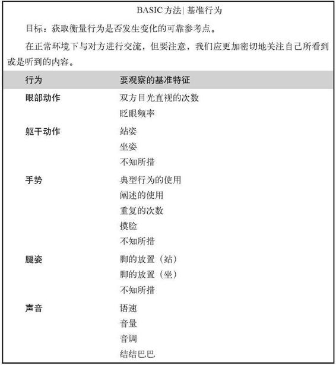
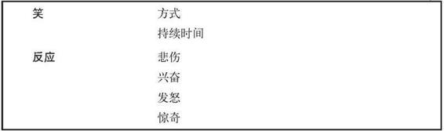
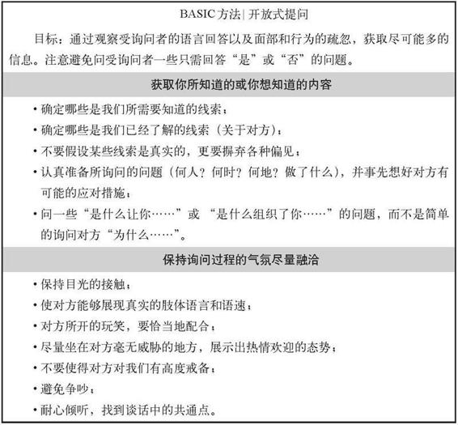
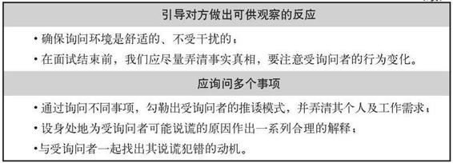

附录1 将BASIC方法应用到实践中组织对话获取真相的指南
现在，我们已经了解到欺骗行为的各种语言或非语言性特征，洞悉了形形色色谎言背后的深层次动机，并掌握了许多被验证行之有效的识别谎言技巧。当我们在生活或工作中遇到欺骗时，BASIC方法将为我们提供各种工具，以获取信任与加强合作，揭开事实的真相。
下面这几页，为我们提供了一个基本框架，以引导并训练我们开始实施BASIC面试方法。我们可以将BASIC方法依次分解为五个相对独立的阶段：确定精准的基线观察；为获取大量的信息做好基础；综合处理信息集；对照受调查者的讲述，将我们的各种直觉放在一起进行对比；估测真实的或心虚的反应。
尽管上述某些步骤可能重叠或是同时执行，但它们代表了在发现真相过程中的一个单独的、重大的事项。

（续）


（续）

（续）